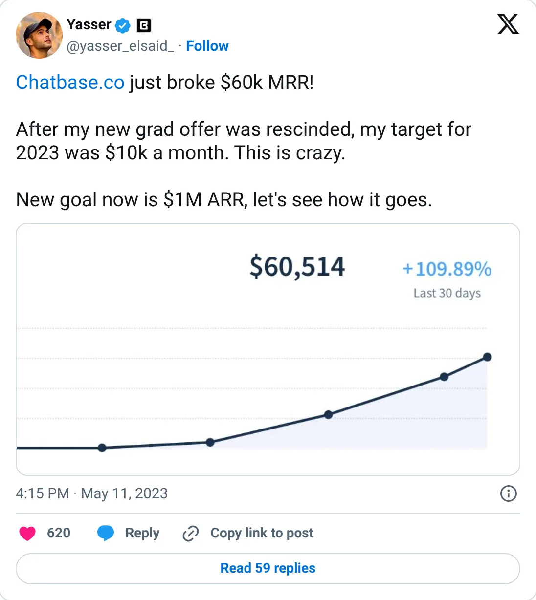
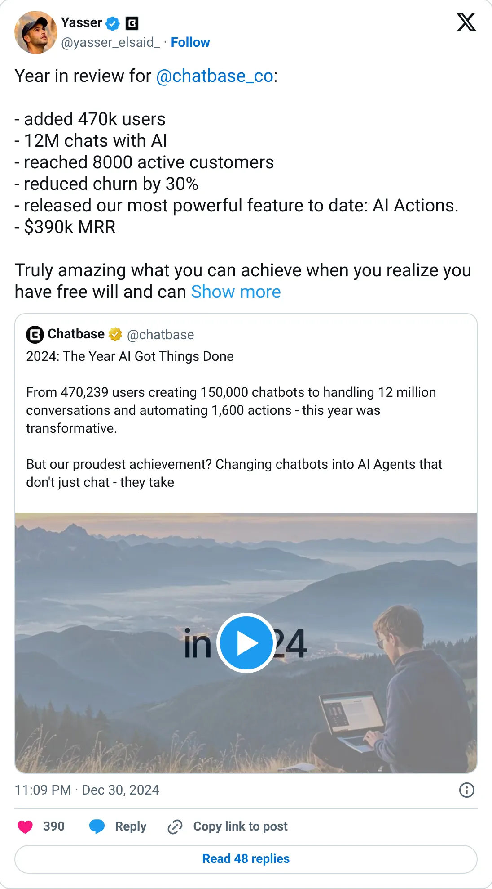
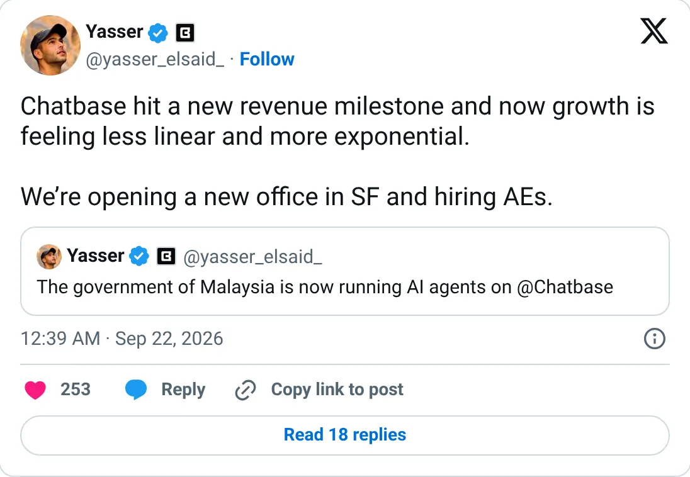

Real, don't clone
Chatbase
A website chatbot at $863,632 of Stripe MRR. You are late.
$863,632 MRR
Should you build this
Chatbase trains a support chatbot on a customer's own content. The number to remember is not a round tweet: $863,632 MRR, 12,424 subscriptions, Stripe, July 2026, with a trail that climbs into that figure. The category is won at the top and crowded underneath (SiteGPT is the honest ~$30k version). Don't build another embeddable chatbot unless you already own a distribution channel they don't.
Cited from the captured posts, shown below: the earliest captured post (May 11, 2023) is the source for “Broke $60K MRR”; the milestone (Dec 31, 2024) is the source for “$390K MRR, 8,000 customers”; the latest milestone (Sep 22, 2026).
Posts this is based on

Broke $60K MRR
Open on X

$390K MRR, 8,000 customers
Open on X

Open on X
What the product is
Build custom AI chatbots/agents trained on your own data for customer support and lead capture on your website.